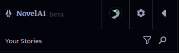
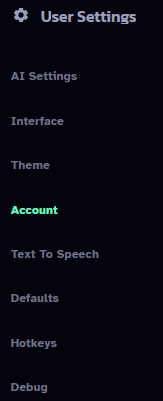
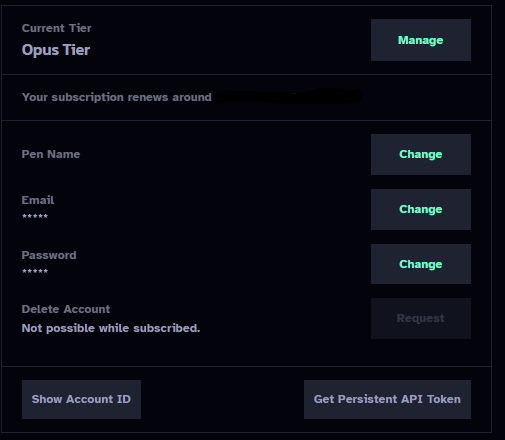
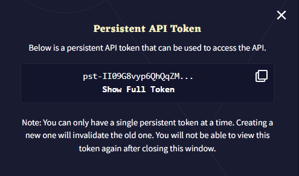

NovelAI
NovelAI 是一项付费订阅服务，提供每月无限次访问其高质量内部文本生成、图像生成和语音合成模型的权限。在此注册账号即可开始使用：https://novelai.net/
新用户只能获得 50 次 免费生成次数来体验模型。当出现 「Not eligible for this model」 错误时，说明免费试用次数已用完，需要订阅付费套餐。
API 密钥
获取 NovelAI API 密钥的步骤如下：
-
点击左侧边栏顶部的齿轮图标。

Left Sidebar -
在「User Settings」下选择「Account」。

User Settings -
选择「Get Persistent API Token」。

Account -
点击复制图标，将 NovelAI API 令牌复制到剪贴板。

Persistent API Token
模型
如果你订阅了 Opus 套餐，Erato 是首选模型。若没有 Opus，Kayra 是最佳可用模型。
Clio 在 Tablet/Scroll 套餐下拥有更大的上下文长度，但 Kayra 的性能通常足以弥补这一差距。
设置
设置文件位于此处（SillyTavern/data/<user-handle>/NovelAI Settings）。
也可以手动添加自己的设置文件。
响应长度
每条消息希望生成的文本量。注意 NovelAI 每次响应的限制为 150 个 token。
上下文大小
在任意时刻保留在上下文中的聊天 token 数量。最大上下文大小取决于模型和订阅套餐：
- Kayra（Tablet）- 3072 token
- Kayra（Scroll）- 6144 token
- Erato（Opus 专属）、Kayra（Opus）和 Clio（所有套餐）- 8192 token
前缀（Preamble）
插入在聊天内容正上方的文本，用于调整写作风格。推荐格式为简短标签列表，如「[ Style: chat, detailed, sensory ]」。
预设说明
以下是 NovelAI 官方对各默认预设用途的说明。
Erato
- Golden Arrow - 全能型预设。
- Wilder - 词汇选择更加多样，重新生成时差异更大，也更容易出错。
- Zany Scribe - 避免错误和重复，倾向于使用更复杂的词汇。
- Dragonfruit - 语言丰富复杂，几乎不重复，但更容易出现错误和矛盾。
- Shosetsu - 为日语写作设计，英语写作同样适用。
Kayra
- Asper - 适用于创意写作，期待意想不到的转折。
- Carefree - 全能型预设。
- Fresh-Coffee - 保持故事方向，对指令的遵循效果良好。
- Pro_Writer - 模仿畅销小说的节奏和感觉。
- Stelenes - 更倾向于选择合理的替代方案，重试时有更多变化。
- Tea_Time - 越写越好。
- Writers-Daemon - 极具想象力，有时过于天马行空。
Clio
- Edgewise - 能够很好地适应各种生成风格。
- Fresh Coffee - 保持故事方向。
- Long-Press - 适用于创意散文。
- Talker Chat - 为聊天风格生成而设计。
- Vingt-Un - 偏向散文风格的优秀通用默认预设。
在 SillyTavern 中使用 NovelAI 的技巧与常见问题
从其他 ST 后端 API 切换到 NovelAI 时，会出现许多常见问题。这些差异源于模型的训练目的不同。你很可能之前使用的是 OpenAI 或 Anthropic 模型（或仿照这些模型的本地模型），它们是为遵循用户指令而训练的。NovelAI 的模型则完全围绕文本补全构建：它们不将你的输入视为消息并制定回应，而是尝试续写输入的提示词。因此，适用于其他 API 的许多技巧和通用知识在 NAI 上可能并不奏效。
调整 NovelAI 的设置
在「高级格式设置」（A 图标）下：
- 将「Context Template」设置为「NovelAI」
- 将「Tokenizer」设置为「Best match」
- 勾选「Always add character's name to prompt」
- 勾选「Collapse Consecutive Newlines」
- 取消勾选「Instruct Mode」下的「Enabled」
在「用户设置」（带齿轮的人像图标）下：
- 开启「Swipes」（虽非 NAI 专属，但极为实用，建议开启）
为 NovelAI 构建/调整角色卡
为 NovelAI 优化角色卡时，推荐两种描写角色的方式：散文式和属性式。
散文式简单到令人难以置信：「Sylpheed 是一个看似年轻、实际已有 900 岁的精灵。她身材娇小，长着白色长发，在编成侧马尾的部分渐变为绿色，眼睛是十字形的祖母绿。[...]」就是这样。只需用普通句子描述角色的外貌、行为等，AI 就能理解。
如果你对自己的写作能力不够自信，或希望有更结构化的方式，可以使用属性法——这种格式存在于 NovelAI 的训练数据中。它是一个简单的角色特征列表，分属不同类别。以下是经测试对 NovelAI 模型有效的属性：
Name:
AKA:
Type: character
Setting:
Nationality:
Species:
Gender:
Age:
Height:
Weight:
Appearance:
Clothing:
Attire:
Personality:
Mind:
Mental:
Likes:
Dislikes:
Sexuality:
Speech:
Voice:
Abilities:
Skills:
Quote:
Affiliation:
Occupation:
Reputation:
Secret:
Family:
Allies:
Enemies:
Background:
Description:
Attributes:「Type: character」用于告诉 AI 这是在描述一个角色（而非地点、物品或其他事物）。其余属性均为可选，部分存在重叠（例如 Personality、Mind 和 Mental 含义基本相同），但这些经过测试，与 NovelAI 模型配合良好。填写与你的角色相关的属性即可。属性值应使用小写字母，用逗号分隔，无需加引号。例如：
Skills: lockpicking, stealth, running away very fast推荐这些方法，是因为它们存在于 NovelAI 的训练数据中，因此特别适合该模型。
示例角色卡
以下是两张专门为 NovelAI 制作的示例角色卡，展示了不同的创作方式。第一张 Valka 使用属性法描述角色，第二张 Eris 使用散文描述，并包含大量示例对话。
{kind=link}
{kind=link}
不应该做什么
大多数现有的角色卡格式并不适合 NovelAI。它们有时能产生一些结果，甚至有不错的效果，但存在诸多问题。W++ 是问题最大的格式之一——它与 NovelAI 模型的训练内容完全不符，而且大量使用方括号/花括号/引号，消耗大量 token，却毫无实际收益。
在非 NovelAI 原生格式中，AliChat 是最有可能奏效的，因为它依靠示例消息同时传达角色信息和语气，采用的正是你希望 AI 输出的消息格式。
对于其他大多数格式，由于它们通常是列举角色不同特征的方式，可以比较直接地转换为属性法。
应该使用哪个模块？
可能是「No Module（无模块）」。如果希望角色说话风格更加华丽，Prose Augmenter 很有用，但要注意不要过度使用。Text Adventure 可能适用于文字冒险风格的角色卡或故事。
不需要使用 Instruct 模块？
你可以在需要时临时调用 Instruct 模块。在消息中另起一行，将指令用花括号括起来，格式如：{ CharName is offended by that seemingly innocuous statement }（文字与括号之间的空格是必须的）。这样做会让 AI 短暂切换到 Instruct 模块。不建议一直使用 Instruct 模块，因为它往往比其他模块产生的输出创意性更低——只在需要强力引导 AI 朝特定方向发展时使用即可。
为什么我的回复总是被截断？
NovelAI 将响应长度总计限制在约 150 个 token，即使滑块设置得更高也一样。当达到滑块设定的 token 数或 150（取较小值）时，系统会再生成最多 20 个 token，寻找停止序列或句末标志，因此响应的实际上限为 170 个 token——达到这个上限就会直接停止，导致截断。
如果发生截断，可以通过「继续」选项（文本框左侧三线菜单中）让角色继续回复。
如果经常需要超过 170 个 token 的回复，可以通过以下方式绕过限制：
- 将响应长度保持在 150 个 token。
- 在「高级格式设置」中启用 Auto-continue。
- 将「Target length」设置为所需长度。
这将链接多次生成以产生更长的消息，但如果模型认为已经完成，不能保证回复一定达到目标长度的 100%。
如何让机器人写出更长的回复？
请先阅读上面关于回复被截断的内容，确保回复不会因达到生成长度上限而过早中断。
如果回复没有被截断但仍然太短，很可能是「垃圾进垃圾出」的问题——给模型不好的示例，它就会产生不好的输出。如果角色卡没有示例对话，或示例对话很短，而且你发给机器人的消息也很短，模型就会认为这是正常的方式，回复也会很短。因此，写更长的示例对话，并向机器人发送更长的消息。（你也可以让 NovelAI 为你生成一些示例对话，而不是自己动手。）
如何让机器人不要替我说话？
- 检查角色卡的第一条消息和示例对话是否包含角色替你采取行动——如果有，修改它们，去掉替你行动的部分
- 确保勾选了「Always add character's name to prompt」
- 确保当前使用的用户角色与聊天中其余消息保持一致。如果更改了用户角色却没有改回来（或没有为该聊天锁定角色），通常用于阻止替用户生成内容的规则将失效
- 在「Custom Stopping Strings」中添加
["\n\{\{user\}\}:"]（通常不需要，但有时有帮助）
为什么角色没有回应？
可能有多种原因，需要逐一排查：
- 确保在「高级格式设置」中勾选了「Always add character's name to prompt」
- 检查 API 是否有报错。虽然可以在 NAI 免费试用期间使用 SillyTavern，但一旦试用次数用完，就只会收到错误提示
- 检查「Custom Stopping Strings」中的内容——如果这些字符串在回复开头就被生成，回复可能会被过早截断
应该如何使用 Author's Note？
一般来说，可能不建议使用。它被插入在上下文非常靠近末尾的位置，使用 NAI 模型时，它经常会压倒上下文中的其他所有内容。它主要是早期较弱模型时代的遗留产物，当时更有必要使用。
如何进行场景切换/时间跳跃？
将以下内容作为系统消息，或在下一条消息开头的新行中输入：
***
[ 2 days later ]然后在下一行继续写消息内容。方括号中的文字可以是时间跳跃、新场景或任何其他内容。「***」（趣味名称叫做「dinkus」）用于告诉 AI 场景已经改变，方括号中的文字则提供更多上下文。
AI 一直重复特定词语/短语，该怎么办？
如前所述，可以适当提高重复惩罚滑块的值，但调得太高可能会使输出变得语无伦次。 要更彻底地解决问题，可以回溯上下文，尤其是最近的消息，删除重复出现的词语/短语。将其从上下文中移除，AI 就少了重复使用它的理由。